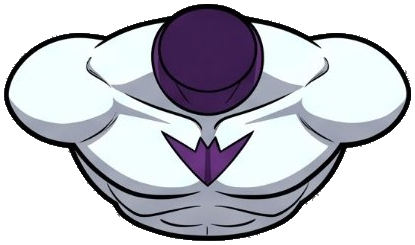
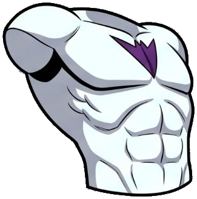
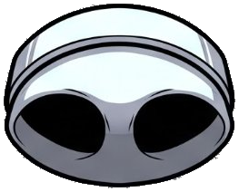

Status: PROPOSAL ONLY. Nothing has landed. Approval 0/1. Reply with two letters, e.g. “Torso A, Pelvis A” (or any A/B mix). Both torso drawings land either way — this pick only fixes their names. Only the pelvis pick deletes a name (one drawing, two names).
Recommendation (evidence in README): Option A for both. The 34-pass naming is the content-correct scheme: it is right on the two independently checkable crossed labels (head vs neck-ring, fist vs open palm), and its torso/pelvis notes match the art.
Verdict: genuinely different drawings. Pixel check: Torso_Front vs Torso_LeanBack — mean RGB difference 94.97 on common opaque pixels (same-drawing pairs score 0.00). Sizes differ: 408×238 vs 317×320. Do NOT delete either.

On disk today as both Torso_Front.png (33-pass file, survives) and Torso_LeanForward.png (34-pass re-crop, pixel-identical colour content: alpha IoU 0.9771, RGB diff 0.00).

On disk today as Torso_LeanBack.png (34-pass). The 33-pass called this same bbox Torso_LeanForward — that is the real collision: both passes used “LeanForward” for different drawings.
Torso_LeanForward, Y = Torso_LeanBack. Both land under these names (34-pass files).Torso_Front, Y = Torso_LeanForward. Both land; “LeanBack” disappears as a name. Landed bytes are still the 34-pass re-crops, renamed — the surviving 33-pass Torso_Front.png becomes the duplicate.Also note: a straight front torso exists only inside Flex_Front; neither X nor Y is a straight-front standalone slice.
Verdict: same drawing. Pixel check: Pelvis_Top_Dome vs Pelvis_UnderView — trimmed size identical 255×204, alpha IoU 0.9692, RGB diff 0.00. Sheet-2 bbox [570, 332, 824, 535] in both indexes. Only one name lands; the other becomes an alias.

The drawing: a dome with two black leg-socket openings. (For contrast, Pelvis_Whole.png is a different drawing — whole pelvis/brief, RGB diff 103.74 vs the dome — and it lands regardless.)
Pelvis_UnderView — describes what you see (underside, two sockets). Lands as Pelvis_UnderView.png (34-pass file).Pelvis_Top_Dome — describes the dome top. Lands as Pelvis_Top_Dome.png (same 34-pass bytes, renamed); the surviving 33-pass Pelvis_Top_Dome.png becomes the duplicate.34 canonical piece PNGs land (list in landing-manifest.md), plus the canonical index (JSON + CSV) with the picked names. 21 duplicate on-disk piece PNGs do not land. No .blend1, no frames/ scratch, no pose-table / flex-spin / kick clip variants land on this pick — those collisions still need their own picks.